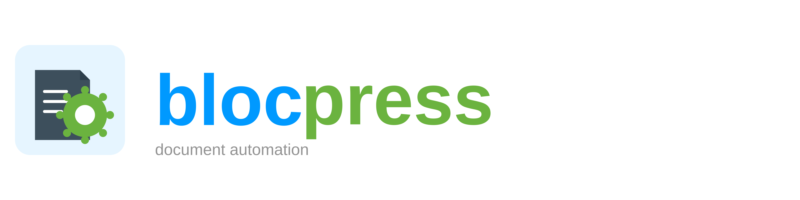

Turn LibreOffice Writer templates into PDF, RTF, or ODT via a single HTTP call — self-hosted, open source, Docker-ready.
# Generate a PDF from an ODT template $ curl -X POST \ http://localhost:8080/api/render/template \ -H "Accept: application/pdf" \ -F "template=@invoice.odt" \ -F "data=@invoice.json" \ -o invoice.pdf ✓ invoice.pdf (52 KB) 200 OK
Blocpress is a free, self-hosted document generation service that turns LibreOffice Writer templates (ODT) into production-ready PDF, RTF, or ODT documents — fully automated via a simple HTTP API.
Designed for enterprise document workflows, Blocpress is ideal for generating contracts, invoices, letters, and reports from structured JSON data. Templates are authored in LibreOffice Writer using standard User Fields, conditional sections, and repeat groups — no proprietary markup language required.
The server runs as a Docker container and exposes a clean OpenAPI/REST interface. A built-in template workbench lets template designers upload, validate, and approve templates through a browser-based UI with a full review workflow.
Render LibreOffice ODT templates into production-ready PDF or RTF documents using headless LibreOffice — no proprietary rendering engine.
Generate documents via POST /api/render/template. No authentication required for stateless rendering — just send your template and JSON data.
Browser-based UI for template designers: upload ODT templates, run validation, manage versions, and publish approved templates to production.
Use standard LibreOffice Writer to author templates. Fields, conditional sections, and repeat groups map directly to JSON data — no custom syntax to learn.
Single Docker image with built-in LibreOffice, health check, and JWT authentication. Deploy on-premise in minutes — no cloud dependency.
Free to use, self-hosted, and fully open source under MIT license. No vendor lock-in, no usage fees, no data leaves your infrastructure.
Start the server, download a sample template with matching JSON data, and generate your first PDF in three steps — no configuration required.
1. Run the container
docker run --name blocpress-render -d -p 8080:8080 flaechsig/blocpress-render
The stateless render endpoint (POST /api/render/template) requires no authentication.
For name-based rendering (POST /api/render/{name}), a JWT Bearer token is required.
The image ships with a built-in dev key and issuer. To use your own identity provider, override via
environment variables: -e MP_JWT_VERIFY_PUBLICKEY="..." and
-e MP_JWT_VERIFY_ISSUER="..."
2. Download a sample
3. Generate a PDF
curl -X POST http://localhost:8080/api/render/template \ ① -H "Accept: application/pdf" \ ② -F "template=@welcome.odt" \ ③ -F "data=@welcome.json" \ ④ -o welcome.pdf ⑤
application/pdf, application/rtf, or application/vnd.oasis.opendocument.text)Blocpress processes ODT templates through a four-stage merge pipeline:
text:section-source are inlined, enabling reusable content blocks (e.g. terms & conditions).customer.name) are replaced with values from your JSON payload.The merged document is then passed to headless LibreOffice for export to PDF or RTF. The entire process is stateless — no data is stored between requests.
/q/swagger-ui